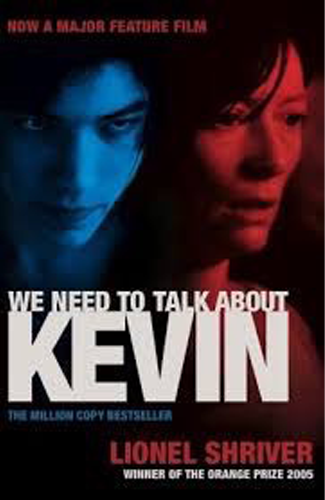
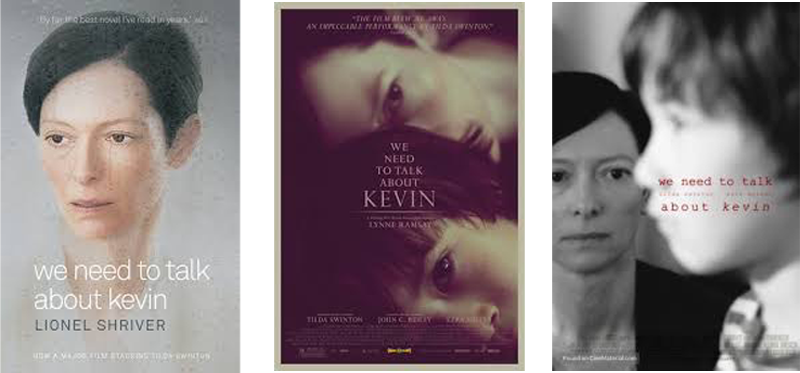
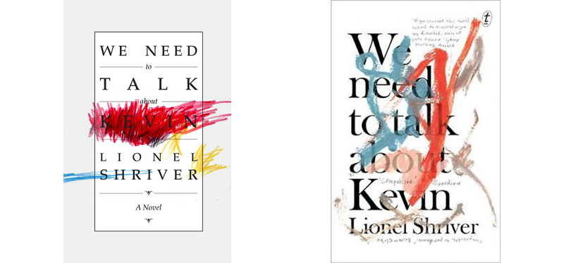
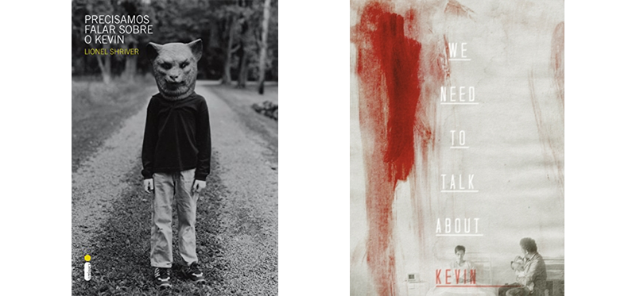
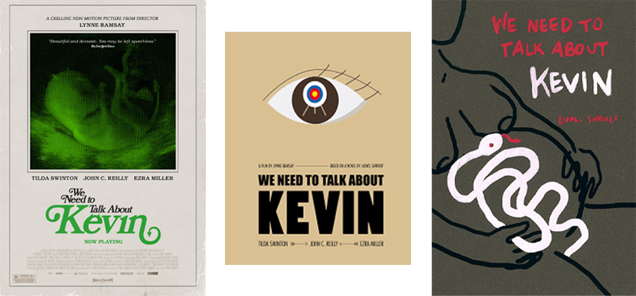

Even though I read ebooks and listen to audiobooks more and more often, I still love good old fashioned paperbacks — me and probably every other bookworm out there. In physical form, books have a kind of presence that takes them beyond the art of storytelling and ideas and makes them into tangible pieces of art. And a book’s cover is an important, integral part of that art.
This is one of the reasons why I believe the cover has to harmonize with the book. The other reason, of course, is that a cover is often the first point of contact the reader makes with the book and as such it has to send the right message. It has to position the book within the appropriate genre. It has to hint at the kind of experience that the book will deliver. The cover is a promise to the reader which will then be fulfilled by the words.

It was a particular book, and its particular cover, that sparked these thoughts for me: We Need to Talk about Kevin by Lionel Shriver. I’ve heard about the book years ago, probably around the time when it was made into movie, but I finally got to read it only years later. In a second-hand bookshop I picked up a copy of it with this cover.
I don’t like this cover. It’s a cover for a gory thriller, whereas Shriver’s novel is a pensive drama. The colors, blue and red, do evoke a sense of foreboding, but they’re too sensational for Shriver's novel.
Since I liked the book a lot and I thought it deserved and equally exceptional cover, I googled to check other editions. Unsurprisingly, many covers were based on the movie images, and out of those I preferred the ones that worked with feelings of melancholy and oppression, rather than sensationalism. I thought these covers represented the tone of the book much better.

Then there were covers that played with the unsettling nexus of child’s creativity and destruction, which I thought was an interesting idea.

I came across a couple of rather spooky covers.

I found a cover that made me think of "Rosemary's Baby" and a cover that brought to mind "A Clockwork Orange". And this last cover... I honestly don't know what to think about but it certainly, certainly doesn't fit Shriver's book.

All these various covers provide a good illustration for what I mean when I say that a cover sends a message to the potential reader communicating what kind of book they’re about to pick up.
When thinking about your cover, it’s a good idea to have a look at covers of bestselling books in your genre. It’s also a good idea to look, where available, at alternative covers of those books (earlier editions, covers from other countries, etc.) to compare which designs position the books in the more suitable niche and which communicate a promise that’s more closely delivered by the book itself.